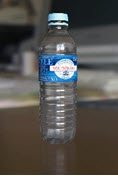
本文介绍了一系列用于渲染塑料瓶中液体的更高级技巧。将带您了解实现逼真效果所需的各个着色方面。另外，它还介绍了使用光线切换着色器最大限度减少某些光线计算的方法。这样，您便可以在不牺牲渲染质量的前提下缩短渲染时间。
在渲染液体和容器表面时，需要考虑着色的方方面面。如果以物理准确性为先，那么默认的标准曲面着色器设置应该就已足够。但是，如果希望塑料瓶看起来更干净、更逼真，则启用“菲涅尔”(Fresnel)和“法线方向的反射率”(Reflectance at Normal)是必不可少的，而且可能更适合摄影工作室级别的图像。
如果渲染速度是主要考虑因素，您可能需要禁用某些属性（“启用内部反射”(Enable Internal Reflections)、“焦散”(Caustics)、“反弹系数”(Bounce Factor)设置为 0）。要进一步缩短渲染时间，应考虑使用光线切换着色器，禁用系统开销巨大的渲染属性（如次光线的透射粗糙度）。
在阅读本文之前，建议您先学习使用 Arnold 渲染玻璃曲面的教程，以便能够更熟悉渲染玻璃和液体表面所需的建模要求。
透射的“光线深度”(Ray Depth)已增加到 7，以便让足够的光线穿过塑料瓶和液体表面。场景照明采用区域光，“灯光形状”(Light Shape)设置为“圆柱体”(Cylinder)。场景中还有一个天空。
下面的示例显示了更改用作塑料瓶着色器的标准曲面着色器的各种属性所产生的效果。
取消选中内部反射将在次反弹中禁用间接镜面反射和镜像完全反射计算。
请记住，尽管禁用“启用内部反射”(Enable Internal Reflections)可以显著缩短渲染时间，但也会影响塑料的外观。因此，在使用此功能前，您应该考虑精确的渲染质量和速度哪个更重要。
| 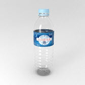 | 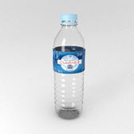 |
| 启用内部反射(Enable Internal Reflections)：启用（17 分 45 秒）。 | 启用内部反射(Enable Internal Reflections)：禁用（7 分钟）。 |
液体的顶部已使用弯液面准确建模。弯液面是由于表面张力而在液体上表面靠近容器或另一物体表面的位置形成的曲线。
| 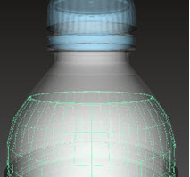 | 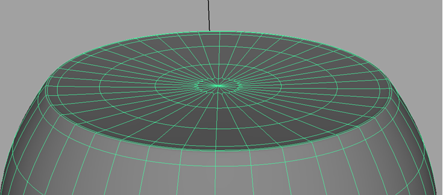 |
为弯液面建模。请确保有足够的循环边将曲面顶部向下拉。
注意，塑料着色器会影响穿过塑料的光线，并会对液体内部产生影响。因此，应确保透射的“光线深度”(Ray Depth)设置得足够高，以便光线可以同时穿过塑料和液体表面。“折射率”(Index of Refraction)已更改为水的折射率：1.33。base_weight 已降低到 0.9。
下面的示例显示了更改水着色器的各种 standard_surface 属性所产生的效果。
默认情况下，水看起来会有点暗。少量增加“漫反射”(Diffuse)有助于使水的外观“变亮”（请注意，这不是一种在物理上准确的方法）。
| 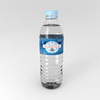 | 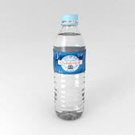 |
| 基础权重：0 | 基础权重：0.2 |
Specular_weight 保留为 0，因为我们不希望瓶子里的水出现镜面反射。
| 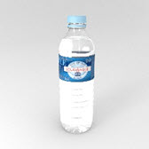 | |
| 镜面反射(Specular)：0（水看起来正确）。 | 镜面反射(Specular)：1（水看起来不正确）。 |
下面的图像显示了使用和未使用“启用内部反射”(Enable Internal Reflections)时水的表面渲染效果之间的差别。这些差别非常细微，但可以看到，差别主要在瓶子底部。
| 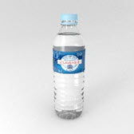 | |
| 启用内部反射(Enable Internal Reflections)：启用 | 启用内部反射(Enable Internal Reflections)：禁用 |
“焦散”(Caustics)菜单位于 standard_surface 着色器中。标准曲面着色器中的此开关指定漫反射 GI 光线能否“看见”镜面反射和透射光线（默认情况下，在漫反射光线中只会计算标准曲面着色器的直接和间接漫反射照明）。
下面的图像显示了使用和未使用焦散时瓶子和液体的渲染效果之间的差别。
| 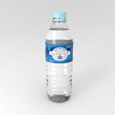 | 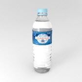 |
| 焦散(Caustics)：禁用 | 焦散(Caustics)：启用 |
为了使水看起来浑浊，透射的“粗糙度”(Roughness)已增大到 0.4。增大此值将增加渲染时间。我们使用了一个“光线切换”着色器来最大限度缩短渲染时间。
光线切换着色器可以帮助减少场景中计算的光线数量，从而在不牺牲渲染质量的情况下缩短渲染时间。
视线需要发生折射，因为需要有浑浊粗糙度才能使液体看起来浑浊。而次级的光泽、阴影和漫反射光线使用的是另一个没有 transmission_roughness 的着色器 (Water_Secondary_Rays)，这会缩短渲染时间。
在下面的图像中可以看到，渲染质量几乎没有区别，但渲染时间显著缩短。
| 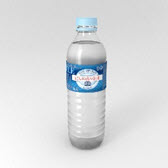 | 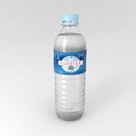 |
| 未使用光线切换着色器：31 分 15 秒 | 光线切换着色器：16 分 14 秒 |